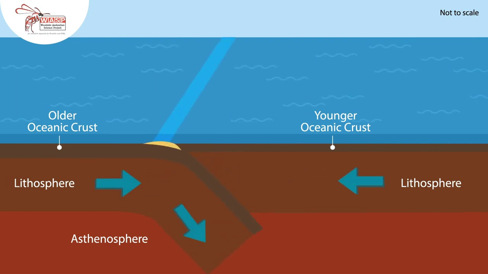
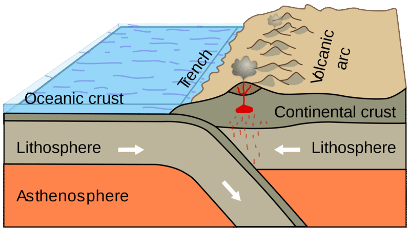
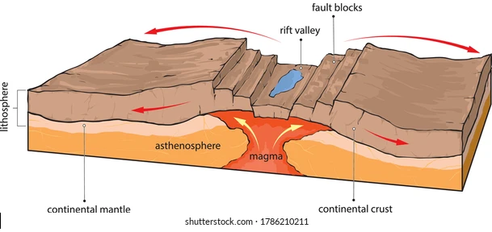

A boundary where one of the plates is being pushed below the other causing a subduction zone. The colder and denser plate will be pushed below the warmer and younger plate.

Continental/Continental
A boundary where two plates collide with each other. Due to both the plates being cold and dense they cannot create subduction zones. When they collide they smash into each other.
Continental/Oceanic
A tectonic plate that is composed of oceanic lithosphere collides with a plate composed of continental lithosphere. There is a subduction zone formed here.

Divergent
Continental
Where two continental plates move away from each other creating a rift-shaped structure. As they break away from each other they arch upwards from the convection currents below.

Oceanic
Where two oceanic plates move away from each other creating a mid-ocean ridge. The rising convection currents lift the plates, as they move farther away, magma seeps through the cracks and solidifies.
Transform
Transform boundaries when two plates slide past each other. Due to them only sliding across each other they can not create or destroy. Transform boundaries create fault lines.